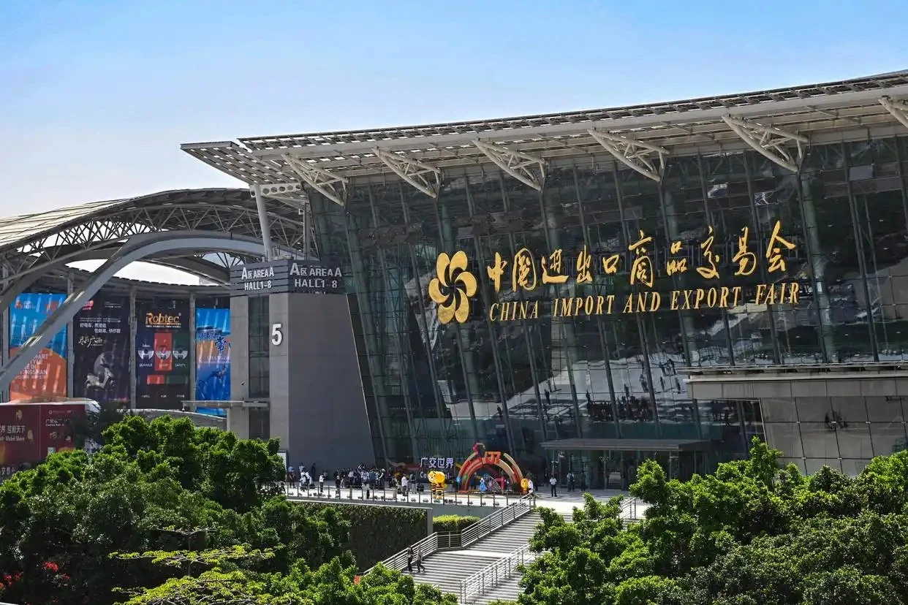
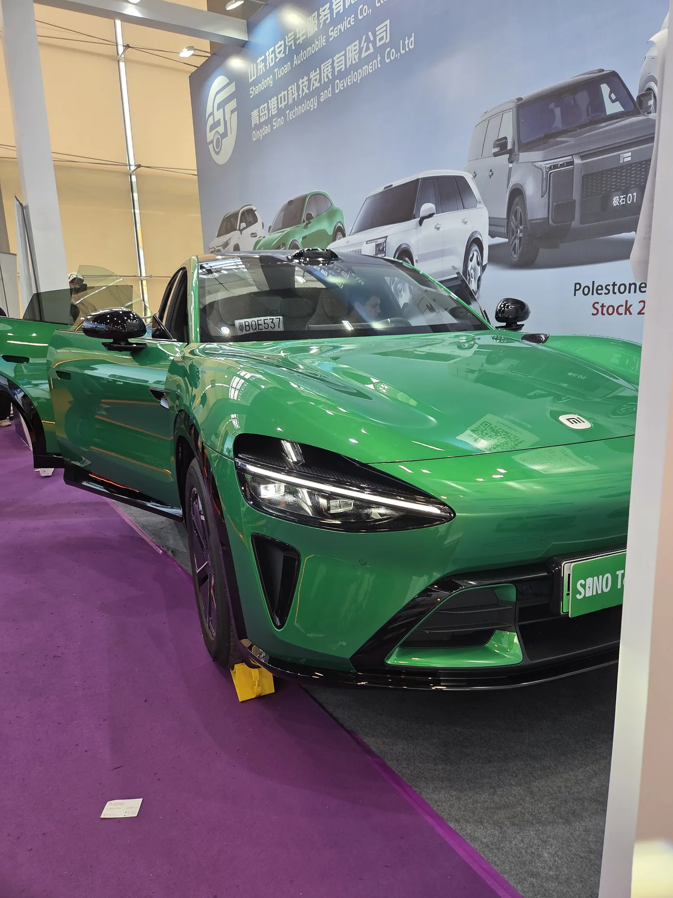
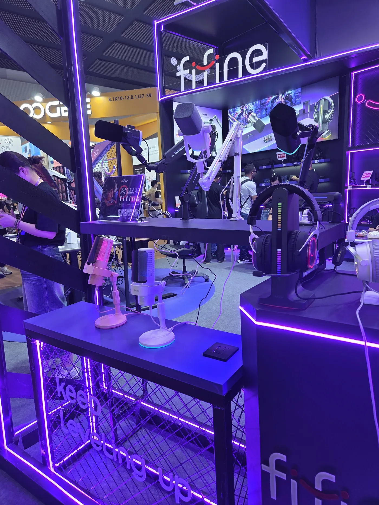
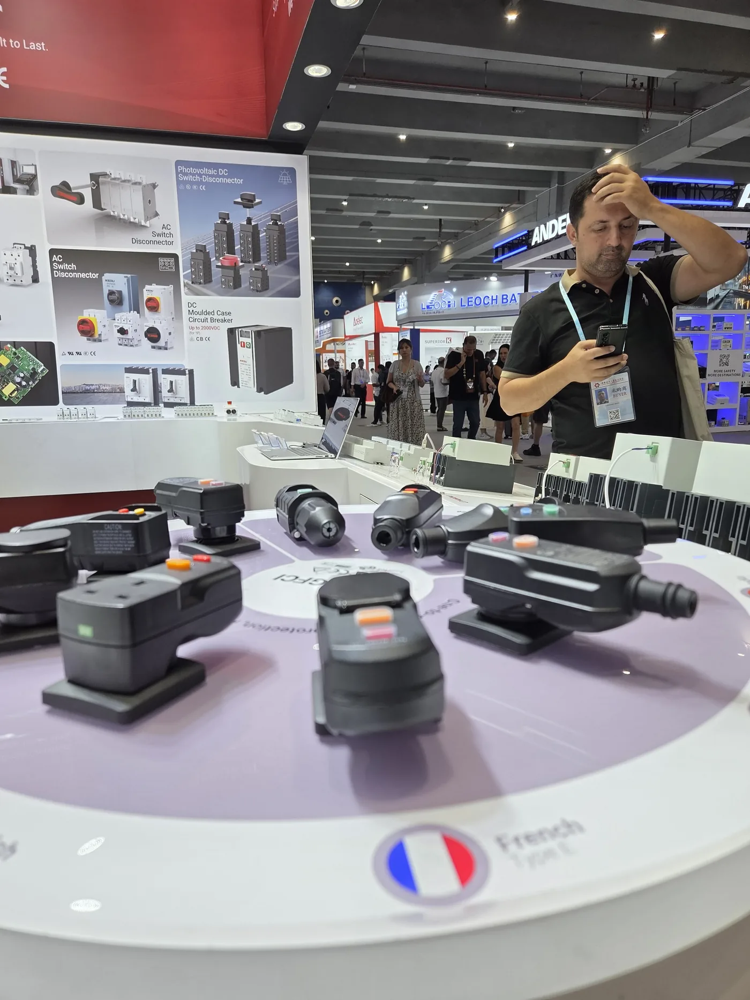
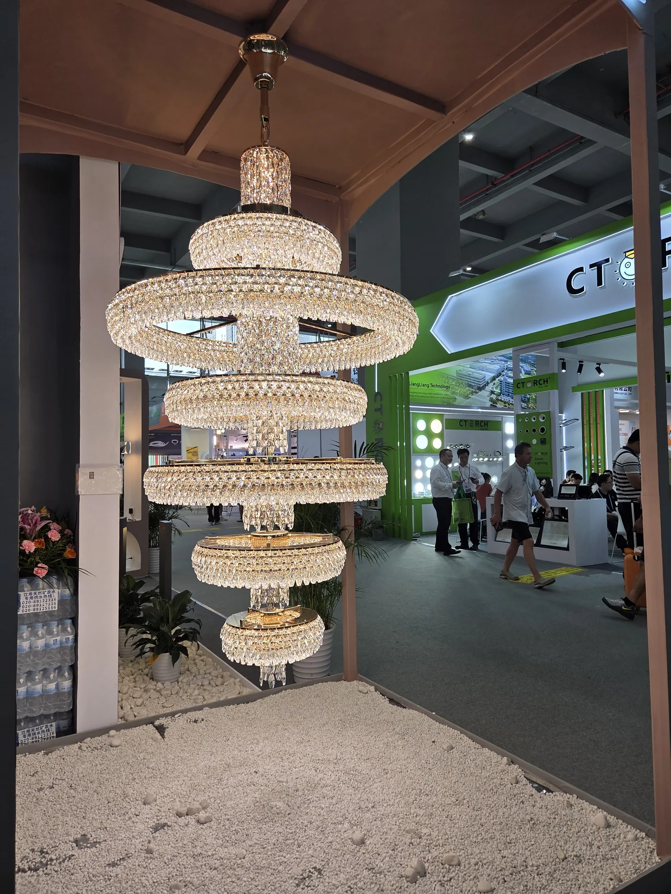
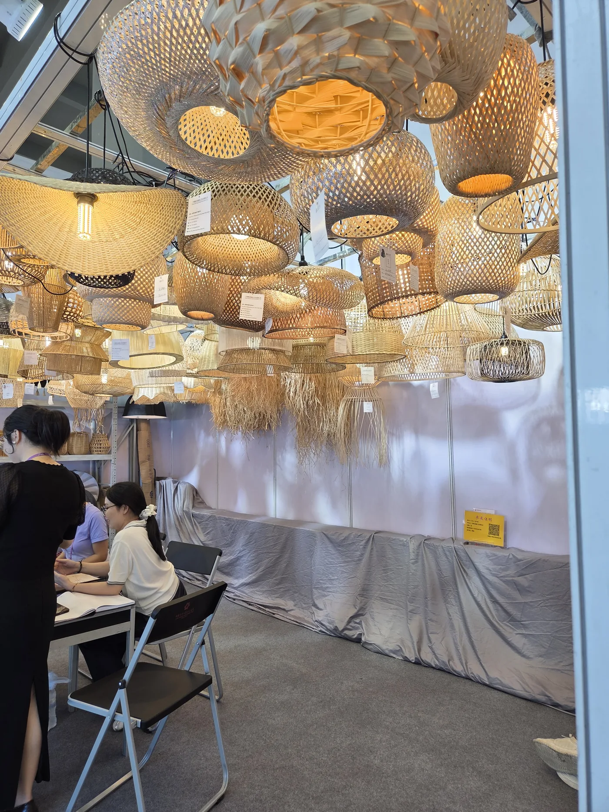
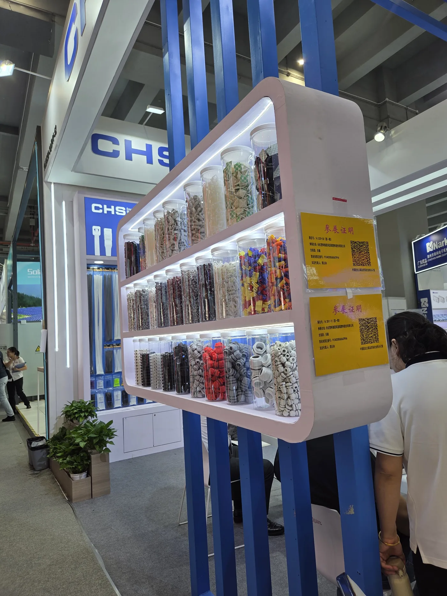
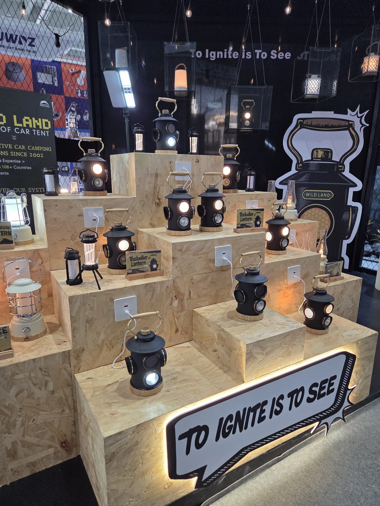
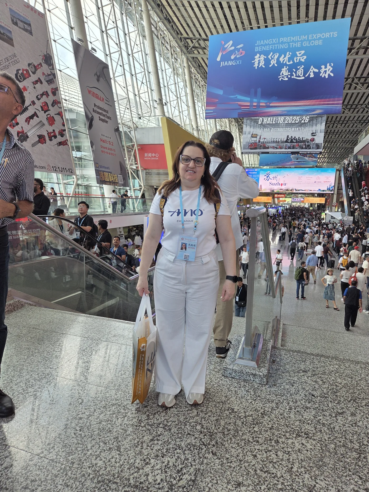
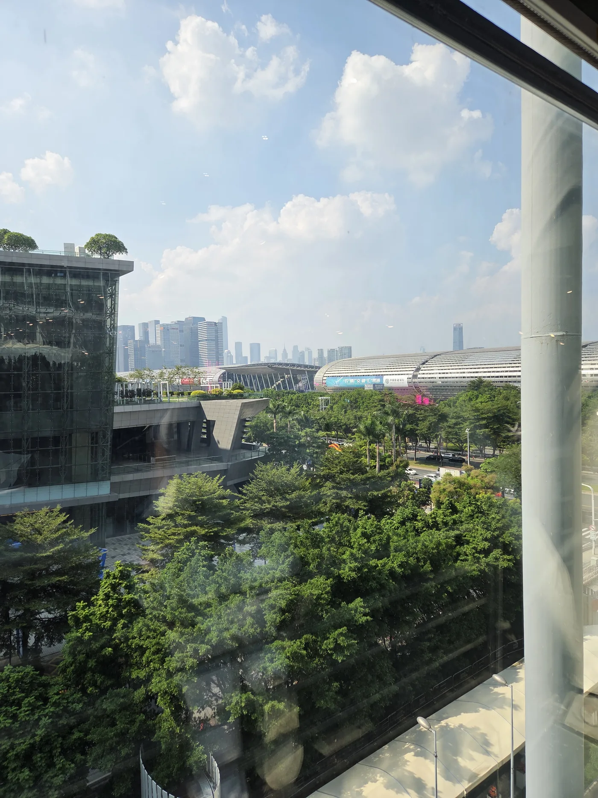

A Canton Fair de outubro de 2026 — sua 140ª edição — acontece dividida em 3 fases de 5 dias cada, com intervalos de 3 dias entre elas para a troca de expositores. Cada fase concentra setores específicos da economia global.
O erro mais comum de quem vai pela primeira vez: não saber em qual fase o seu negócio se encaixa e comprar passagem para a data errada. Com esta página, você vai saber exatamente quando ir — e o que encontrar lá.
A primeira fase é a mais concorrida e tecnologicamente densa da Canton Fair. Guangzhou vira a capital global da inovação por 5 dias — fabricantes de eletrônicos, veículos elétricos, painéis solares, robôs industriais e maquinários de ponta ocupam os maiores pavilhões do complexo Pazhou.
Em 2025, a AMO Embarque estava presente nesta fase. A expansão dos veículos elétricos foi impressionante — Xiaomi SU7, BYD, Mini EV Haibao e dezenas de marcas desconhecidas no Brasil mas com qualidade de exportação. O segmento de energia solar e componentes elétricos também surpreendeu em variedade e preço.
Microfones, câmeras, gadgets, periféricos, componentes para indústria e varejo. Marcas como Fifine, Anker e centenas de OEMs diretos.
Patinetes, bicicletas, mini-carros elétricos, motos elétricas e SUVs. O maior showroom de EVs da Ásia por 5 dias.
Painéis fotovoltaicos, inversores, baterias de armazenamento, microgeração e sistemas completos de energia off-grid.
Robôs industriais, braços mecânicos, automação para logística, AGVs e soluções para indústria 4.0.
Luminárias comerciais, industriais e residenciais. LEDs, lustres, iluminação arquitetônica e sinalização.
Máquinas para têxtil, alimentação, embalagem, madeira e metalurgia. Equipamentos para pequenas e grandes indústrias.



A missão AMO Embarque cobre a Fase 1 com guia, credencial e roteiro por setor. Vagas limitadas.
A segunda fase é a dos produtos de alto giro para o mercado brasileiro. Importadores de artigos para casa, presentes, brinquedos, itens de decoração e produtos para varejo encontram aqui o maior volume de opções disponíveis em qualquer feira do mundo.
Esta fase atende perfeitamente empresas de e-commerce, lojas de artigos domésticos, importadores de utensílios, redes de presentes e varejo em geral. Em 2025, os segmentos de decoração sustentável (bambu, rattan) e pet tiveram crescimento expressivo de expositores.
Móveis, utensílios, têxtil para casa, objetos decorativos, louças, luminárias e artigos de cozinha.
Lembranças, brindes corporativos, artigos sazonais (Natal, Páscoa), itens personalizáveis e embalagens.
Brinquedos educativos, jogos, pelúcias, material escolar e artigos para bebê. Grande concentração de fabricantes certificados.
Produtos para marketplace, embalagens, displays de loja, soluções de packaging e itens de alta rotatividade.
Ração, acessórios, camas, brinquedos e equipamentos para pets. Setor em forte crescimento na feira.
Produtos em bambu, rattan, madeira certificada e materiais naturais. Alta demanda do mercado brasileiro.



Grupo organizado com foco em casa, varejo e consumo. Guia e credencial inclusos.
A terceira fase encerra a edição com os setores de maior volume de importação brasileira por tonelagem: têxtil e confecção. Também cobre produtos de saúde, higiene, fitness, cosméticos e agronegócio — setores que crescem ano a ano na pauta de importações do Brasil.
Para quem atua em moda, confecção, calçados, saúde e beleza, esta é a fase mais estratégica da feira. As condições de MOQ (pedido mínimo) tendem a ser mais flexíveis nesta fase do que nas anteriores, facilitando o início de uma relação com novos fornecedores.
Tecidos, fios, roupas prontas, moda feminina, masculina, infantil, uniformes e bordados. A maior concentração de fabricantes têxteis do mundo.
Sapatos, tênis, sandálias, bolsas, cintos e acessórios de moda. Fabricantes diretos com capacidade de personalização.
Equipamentos médicos, suplementos, produtos de saúde, fisioterapia e odontologia.
Equipamentos de academia, artigos esportivos, camping, outdoor e aventura. Setor em forte expansão.
Maquiagem, skincare, cabelos, perfumaria e ferramentas de beleza. Crescimento acelerado de marcas chinesas no mercado global.
Máquinas agrícolas, insumos, processados alimentares e ingredientes. Relevante para empresas do Sul e Centro-Oeste do Brasil.



A 141ª edição da Canton Fair — prevista para abril de 2027 — seguirá o mesmo formato de 3 fases. Para quem precisa de mais tempo para planejar a viagem ou preparar a empresa para importar, essa edição é a janela ideal.
Importante: as datas de abril 2027 são estimadas com base no calendário histórico da Canton Fair. As datas oficiais são divulgadas pela organização da feira com aproximadamente 6 meses de antecedência. A AMO Embarque avisará os interessados assim que confirmadas.
A Canton Fair não é uma feira de acesso livre. Para entrar nos pavilhões como comprador, você precisa de credencial de importador — que a missão AMO Embarque providencia para todos os participantes antes do embarque.
Entre em contato pelo WhatsApp, defina as fases de interesse e faça a entrada. As vagas são limitadas por grupo.
Sessão de preparação com a equipe AMO: setores prioritários, etiqueta cultural e estratégias de negociação.
Voo internacional com o grupo. Hotel próximo ao complexo Pazhou já confirmado. Sem burocracia: brasileiros entram na China sem visto por 30 dias.
Suporte da equipe AMO em todo o trajeto. Roteiro curado por setor. Apoio para negociação, pedido de amostras e contatos diretos com fabricantes.
Base para abrir seu processo de importação. Muitas parcerias entre empresários do grupo surgem dentro da própria missão.
Sim. A missão AMO pode ser personalizada para incluir duas ou três fases. Entre os blocos há 3 dias de intervalo — usados para visitas a fornecedores fora da feira, cidades próximas (Shenzhen, Hong Kong) ou descanso. Consulte pelo WhatsApp para montar o roteiro ideal.
Use os cards de setor acima como referência. Se ainda tiver dúvida, fale com a AMO Embarque — com sua descrição de negócio, indicamos a fase certa e os pavilhões mais relevantes para você visitar.
Não. Brasileiros têm isenção de visto para a China por até 30 dias desde 2025. Você precisa apenas de passaporte brasileiro válido com mais de 6 meses de validade após a data de retorno.
O ideal é reservar com pelo menos 60 dias de antecedência para garantir passagem em boa tarifa, hotel próximo ao Pazhou Complex e vaga na missão. As vagas são limitadas por grupo.
Passagem aérea São Paulo → Guangzhou → São Paulo, hotel próximo ao Pazhou Complex, traslados aeroporto/hotel/feira, credencial de importador, briefing pré-viagem e suporte durante toda a missão. Add-ons opcionais: Shenzhen, Hong Kong, Dubai.
Nossa equipe monta a proposta certa para o seu negócio — sem compromisso, resposta em até 24h.
100% gratuito · Sem compromisso